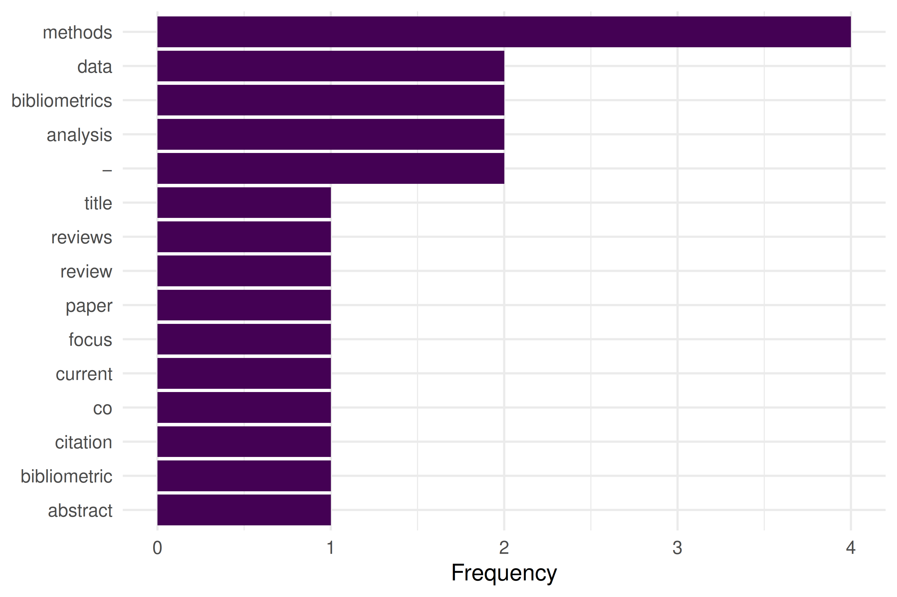

9 Working with Full Text
9.1 Learning objectives
After completing this chapter, you will be able to:
- Extract text from PDF files using
pdftools - Apply OCR to scanned documents with
tesseract - Perform basic text preprocessing (tokenization, stopword removal)
- Assess when full-text analysis adds value over metadata-only approaches
- Navigate the legal landscape of text and data mining
9.3 Conceptual background
Most bibliometric analyses operate on metadata: titles, abstracts, keywords, and citation links. But metadata captures only a fraction of a paper’s content. Full-text analysis opens the door to richer methods: section-level citation context, method extraction, data-availability statements, and fine-grained topic modeling.
The technical pipeline involves three stages: (1) acquisition — obtaining PDF files, subject to access rights and TDM (text and data mining) provisions; (2) extraction — converting PDF content to machine-readable text; and (3) preprocessing — tokenization, normalization, and feature extraction.
pdftools wraps the Poppler library to extract text from born-digital PDFs. For scanned documents, tesseract provides OCR (optical character recognition). tabulizer (based on Tabula) specializes in extracting tables from PDFs. For text preprocessing, quanteda and tm offer comprehensive toolkits.
Legal frameworks vary by jurisdiction. The EU Copyright Directive (2019/790) provides a TDM exception for research. In the US, TDM is generally considered fair use in research contexts, but publisher terms of service may impose additional restrictions.
9.4 Worked example
9.4.1 Extracting text from a PDF
We demonstrate with a programmatically created PDF to keep this example self-contained.
demo_text <- paste(
"Title: A Review of Bibliometric Methods",
"",
"Abstract: This paper reviews current methods in bibliometrics.",
"We focus on citation analysis, co-authorship networks, and topic modeling.",
"",
"1. Introduction",
"Bibliometrics has grown rapidly since the work of Garfield (1955).",
"Modern tools enable large-scale analysis of scholarly communication.",
"",
"2. Methods",
"We surveyed 500 papers published between 2020 and 2023.",
"Data were obtained from OpenAlex.",
"",
"3. Conclusions",
"The field continues to evolve with open data and new computational methods.",
sep = "\n"
)
tmp_pdf <- tempfile(fileext = ".pdf")
pdf(tmp_pdf, width = 8.5, height = 11)
plot.new()
text(0.05, 0.95, demo_text, adj = c(0, 1), family = "mono", cex = 0.8)
dev.off()#> png
#> 2#> Title: A Review of Bibliometric Methods
#>
#> Abstract: This paper reviews current methods in bibliometrics.
#> We focus on citation analysis, co−authorship networks, and topic modeling.
#>
#> 1. Introduction
#> Bibliometrics has grown rapidly since the work of Garfield (1955).
#> Modern tools enable large−scale analysis of scholarly communication.
#>
#> 2. Methods
#> We surveyed 500 papers published between 2020 and 2023.
#> Data were obtained from OpenAlex.
#>
#> 3. Conclusions
#> The field continues to evolve with open data and n9.4.2 Basic text preprocessing
corp <- corpus(extracted)
toks <- tokens(corp, remove_punct = TRUE, remove_numbers = TRUE) |>
tokens_tolower() |>
tokens_remove(stopwords("en"))
dfmat <- dfm(toks)
topfeatures(dfmat, 15)#> methods bibliometrics analysis − data
#> 4 2 2 2 2
#> title review bibliometric abstract paper
#> 1 1 1 1 1
#> reviews current focus citation co
#> 1 1 1 1 19.4.3 Word frequency visualization
top_words <- topfeatures(dfmat, 15) |>
enframe(name = "word", value = "count") |>
mutate(word = fct_reorder(word, count))
ggplot(top_words, aes(x = count, y = word)) +
geom_col(fill = palette_sci(1)) +
labs(x = "Frequency", y = NULL) +
theme_sci()
Figure 9.1: Top 15 words extracted from the demo PDF after preprocessing.
9.5 Diagnostics and interpretation
Full-text extraction quality varies dramatically:
-
Born-digital PDFs:
pdftoolsproduces clean text, but column layouts may interleave columns. - Scanned PDFs: OCR accuracy depends on scan quality, resolution, and language. Expect 90–98% character accuracy for clean English scans.
- Figures and equations: These are lost in text extraction. Do not expect mathematical notation or chart data.
- Headers and footers: Page numbers, journal headers, and running titles pollute the extracted text. Consider filtering by position.
9.7 Limitations and responsible use
- Access rights: Not all PDFs are legally available for TDM. Respect publisher terms and licensing. Open-access articles under CC licenses are generally safe.
- Extraction errors: Two-column layouts, ligatures, and non-standard fonts cause parsing artifacts. Always spot-check extracted text.
- Scalability: Full-text analysis is orders of magnitude more expensive than metadata analysis. Consider whether the additional information justifies the cost.
- Bias: Full text is only available for a subset of publications (typically open access). Analyses based on full text may not generalise to the broader literature (Hicks et al. 2015).
9.9 Common pitfalls
-
Assuming clean extraction. Even
pdftoolsproduces artifacts. Always inspect a sample of extracted text before bulk analysis. - Skipping preprocessing. Raw extracted text contains headers, page numbers, and hyphenated line breaks that must be cleaned.
- Mixing OCR and digital extraction. Some PDFs contain both digital text and scanned images. Detect which pages need OCR before processing.
- Ignoring encoding issues. PDFs may encode characters in non-standard ways. Check for garbled text, especially in references sections.
9.10 Exercises
Extract and compare. Download an open-access PDF. Extract text with
pdftools. Compare the extracted abstract with the abstract in OpenAlex. How accurate is the extraction?Section detection. Write a function that splits extracted PDF text into sections based on numbered headings (“1. Introduction”, “2. Methods”, etc.).
Table extraction. If you have
tabulizerinstalled, extract a table from a PDF and convert it to a tibble. What cleaning steps are needed?
9.11 Solutions
Solutions are provided in 2.11.
9.13 Session info
#> R version 4.4.1 (2024-06-14)
#> Platform: x86_64-pc-linux-gnu
#> Running under: Ubuntu 24.04.4 LTS
#>
#> Matrix products: default
#> BLAS: /usr/lib/x86_64-linux-gnu/openblas-pthread/libblas.so.3
#> LAPACK: /usr/lib/x86_64-linux-gnu/openblas-pthread/libopenblasp-r0.3.26.so; LAPACK version 3.12.0
#>
#> locale:
#> [1] LC_CTYPE=C.UTF-8 LC_NUMERIC=C LC_TIME=C.UTF-8
#> [4] LC_COLLATE=C.UTF-8 LC_MONETARY=C.UTF-8 LC_MESSAGES=C.UTF-8
#> [7] LC_PAPER=C.UTF-8 LC_NAME=C LC_ADDRESS=C
#> [10] LC_TELEPHONE=C LC_MEASUREMENT=C.UTF-8 LC_IDENTIFICATION=C
#>
#> time zone: UTC
#> tzcode source: system (glibc)
#>
#> attached base packages:
#> [1] stats graphics grDevices utils datasets methods base
#>
#> other attached packages:
#> [1] quanteda_4.4 pdftools_3.8.0 arrow_24.0.0 bibliometrix_5.3.0
#> [5] RefManageR_1.4.0 bib2df_1.1.2.0 rcrossref_1.2.1 gt_1.3.0
#> [9] tidytext_0.4.3 glue_1.8.1 openalexR_3.0.1 lubridate_1.9.5
#> [13] forcats_1.0.1 stringr_1.6.0 dplyr_1.2.1 purrr_1.2.2
#> [17] readr_2.2.0 tidyr_1.3.2 tibble_3.3.1 ggplot2_4.0.3
#> [21] tidyverse_2.0.0
#>
#> loaded via a namespace (and not attached):
#> [1] bibtex_0.5.2 RColorBrewer_1.1-3 rstudioapi_0.18.0
#> [4] jsonlite_2.0.0 magrittr_2.0.5 farver_2.1.2
#> [7] rmarkdown_2.31 fs_2.1.0 vctrs_0.7.3
#> [10] memoise_2.0.1 askpass_1.2.1 base64enc_0.1-6
#> [13] htmltools_0.5.9 contentanalysis_1.0.0 curl_7.1.0
#> [16] janeaustenr_1.0.0 cellranger_1.1.0 sass_0.4.10
#> [19] bslib_0.10.0 htmlwidgets_1.6.4 tokenizers_0.3.0
#> [22] plyr_1.8.9 httr2_1.2.2 plotly_4.12.0
#> [25] cachem_1.1.0 dimensionsR_0.0.3 igraph_2.3.1
#> [28] mime_0.13 lifecycle_1.0.5 pkgconfig_2.0.3
#> [31] Matrix_1.7-0 R6_2.6.1 fastmap_1.2.0
#> [34] shiny_1.13.0 digest_0.6.39 shinycssloaders_1.1.0
#> [37] rprojroot_2.1.1 SnowballC_0.7.1 labeling_0.4.3
#> [40] urltools_1.7.3.1 timechange_0.4.0 httr_1.4.8
#> [43] compiler_4.4.1 here_1.0.2 bit64_4.8.0
#> [46] withr_3.0.2 S7_0.2.2 backports_1.5.1
#> [49] viridis_0.6.5 rappdirs_0.3.4 bibliometrixData_0.3.0
#> [52] tools_4.4.1 otel_0.2.0 stopwords_2.3
#> [55] zip_2.3.3 httpuv_1.6.17 rentrez_1.2.4
#> [58] promises_1.5.0 grid_4.4.1 stringdist_0.9.17
#> [61] generics_0.1.4 gtable_0.3.6 tzdb_0.5.0
#> [64] rscopus_0.9.0 ca_0.71.1 data.table_1.18.4
#> [67] hms_1.1.4 xml2_1.5.2 utf8_1.2.6
#> [70] ggrepel_0.9.8 pillar_1.11.1 later_1.4.8
#> [73] brand.yml_0.1.0 lattice_0.22-6 bit_4.6.0
#> [76] tidyselect_1.2.1 miniUI_0.1.2 downlit_0.4.5
#> [79] knitr_1.51 gridExtra_2.3 bookdown_0.46
#> [82] crul_1.6.0 xfun_0.57 DT_0.34.0
#> [85] humaniformat_0.6.0 visNetwork_2.1.4 stringi_1.8.7
#> [88] lazyeval_0.2.3 qpdf_1.4.1 yaml_2.3.12
#> [91] evaluate_1.0.5 codetools_0.2-20 httpcode_0.3.0
#> [94] cli_3.6.6 xtable_1.8-8 jquerylib_0.1.4
#> [97] dichromat_2.0-0.1 Rcpp_1.1.1-1.1 readxl_1.4.5
#> [100] triebeard_0.4.1 XML_3.99-0.23 parallel_4.4.1
#> [103] assertthat_0.2.1 pubmedR_1.0.2 viridisLite_0.4.3
#> [106] scales_1.4.0 openxlsx_4.2.8.1 rlang_1.2.0
#> [109] fastmatch_1.1-8